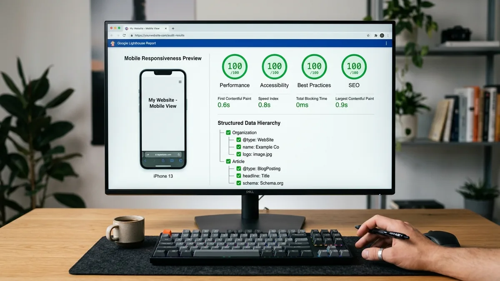

Perkembangan ekosistem teknologi modern telah mengubah cara dunia usaha, lembaga pendidikan, instansi pemerintah, dan pelaku UMKM berinteraksi dengan masyarakat. Di tengah derasnya arus digitalisasi, keberadaan sebuah website profesional tidak lagi sekadar pelengkap profil perusahaan, melainkan telah bertransformasi menjadi aset operasional utama yang menentukan kelangsungan dan kredibilitas sebuah entitas.
Banyak lulusan sekolah kejuruan maupun perguruan tinggi merasa kebingungan menghadapi dinamika dunia kerja yang menuntut efisiensi tinggi. Fakta di lapangan menunjukkan bahwa keahlian teknis pemrograman yang berdiri sendiri sering kali tidak mencukupi jika tidak diimbangi dengan pemahaman mendalam tentang bagaimana produk digital tersebut dipasarkan, ditemukan oleh target audiens, dan menghasilkan nilai nyata bagi pemiliknya. Di sinilah sinergi antara pengembangan website (Web Development) dan pemasaran digital (Digital Marketing) menjadi kombinasi kompetensi yang sangat dicari oleh industri saat ini.
Pergeseran Paradigma: Mengapa Website Menjadi Fondasi Utama Bisnis?
Meskipun media sosial berkembang pesat dan menawarkan jangkauan yang luas, media sosial beroperasi di atas tanah sewaan. Algoritma feed, batasan antarmuka, hingga kebijakan akun pihak ketiga dapat berubah secara drastis tanpa peringatan. Sebaliknya, website resmi adalah properti digital berdaulat penuh milik bisnis.
Pada website resmi, pemilik memiliki kontrol 100% terhadap penyampaian narasi merek (brand storytelling), struktur katalog produk, transparansi informasi kontak, serta rekam jejak legalitas. Ketika calon klien atau konsumen hendak membuat keputusan transaksi bernilai tinggi, mereka hampir selalu melakukan validasi kredibilitas dengan mencari website resmi di mesin pencari Google. Tanpa website yang responsif, cepat, dan aman, sebuah entitas akan kehilangan hingga 70% potensi kepercayaan publik.
Masalah Nyata: Koding Tanpa Pemasaran Menghasilkan Halaman Sepi
Salah satu paradoks terbesar dalam dunia teknologi informasi adalah terciptanya ribuan website dengan arsitektur kode yang rapi dan elegan, namun tidak pernah dikunjungi oleh pengguna nyata. Hal ini terjadi karena para programmer kerap hanya berfokus pada sisi internal perangkat lunak: fungsi logika, kebersihan sintaksis, dan kompleksitas basis data, tanpa memikirkan psikologi pengunjung serta saluran distribusi konten.
Sebaliknya, strategi pemasaran digital yang dirancang tanpa pemahaman dasar arsitektur website sering kali berujung pada kekecewaan. Tim pemasaran mungkin berhasil mendatangkan ribuan klik dari iklan, tetapi pengunjung segera meninggalkan halaman (bounce rate tinggi) karena navigasi yang membingungkan, kecepatan pemuatan (loading speed) yang lambat, atau formulir pemesanan yang rusak pada layar ponsel pintar.
Sinergi Dua Disiplin: Formula Kemenangan di Dunia Industri
Ketika keahlian teknis web development disatukan dengan prinsip digital marketing, lahirlah sebuah alur kerja modern yang sangat efisien dan bernilai jual tinggi:
- Desain Berbasis Konversi (UX for Conversion): Antarmuka web disusun bukan hanya agar terlihat cantik, melainkan dirancang secara ergonomis untuk memandu mata pengunjung menuju tombol tindakan utama (Call-to-Action) seperti pemesanan instan WhatsApp.
- Struktur Ramah Mesin Pencari (Search Engine Optimization): Kode HTML disusun secara semantik, menggunakan hierarki heading yang runut, skema data terstruktur (schema.org), meta tag yang tepat, dan gambar terkompresi WebP agar mudah diindeks pada peringkat teratas Google.
- Kecepatan Akses & Core Web Vitals: Optimasi performa server, minimalisasi file CSS/JS, dan penerapan teknik lazy loading memastikan halaman dapat diakses dalam hitungan detik bahkan pada koneksi seluler 4G yang terbatas.
- Penerapan Copywriting Hipnotik: Teks deskripsi yang dimuat di dalam website tidak kaku seperti buku teks, melainkan menggunakan formula persuasi AIDA (Attention, Interest, Desire, Action) yang menyentuh kebutuhan emosional pembaca.

Peluang Karier Lulusan SMK dan Mahasiswa yang Menguasai Dua Bidang Ini
Bagi siswa SMK kejuruan teknologi informasi (RPL, TKJ, Informatika, DKV, Bisnis Digital) serta mahasiswa vokasi, memiliki pemahaman menyeluruh tentang ekosistem web dan digital marketing membuka pintu karier yang sangat luas. Perusahaan masa kini tidak lagi mencari karyawan yang hanya tahu satu bidang sempit secara terisolasi. Mereka memprioritaskan talenta adaptif yang memahami gambaran besar proses bisnis digital.
Beberapa posisi prestisius yang sangat membutuhkan perpaduan keterampilan ini antara lain:
- Front-End Web Specialist: Pengembang antarmuka yang paham cara menerjemahkan rancangan visual menjadi kode responsif berkecepatan tinggi.
- Technical SEO Specialist: Praktisi optimasi mesin pencari yang mampu mengaudit kode sumber web, memperbaiki struktur URL, mengelola file sitemap.xml, serta mengatasi kendala pengindeksan bot perayap Google.
- Landing Page & Funnel Builder: Perancang halaman promosi spesifik yang mengintegrasikan headline memikat, tombol WhatsApp interaktif, dan pelacakan konversi otomatis.
- Digital Content Strategist: Penulis dan perancang konten yang memahami riset kata kunci, target audiens sasaran, dan tata kelola media digital.
- Webmaster & Maintenance Engineer: Pengelola infrastruktur server lokal, konfigurasi domain DNS, dan sertifikat keamanan SSL/HTTPS.
Mengapa Program Magang Berbasis Praktik Nyata Adalah Kunci Utama?
Buku pelajaran dan tutorial daring di media sosial kerap menyajikan materi secara terfragmentasi. Banyak siswa mampu membuat halaman web sederhana di komputer lokal, namun gugup saat diminta mengunggahnya ke server online, mengatur domain publik, memasang analitik, atau menautkannya dengan nomor WhatsApp bisnis yang aktif.
Melalui Program Magang Pengembangan Website berbasis Digital Marketing, seluruh teori tersebut diintegrasikan ke dalam sebuah simulasi alur kerja agensi digital profesional. Peserta dari jurusan Informatika dan RPL fokus pada rekayasa antarmuka dan struktur kode, peserta DKV mengolah estetika visual dan format WebP, peserta Bisnis Digital membedah riset kata kunci dan penulisan konten persuasif, sementara peserta TKJ memastikan server lokal stabil serta konfigurasi domain DNS terhubung tanpa kendala.
"Portofolio nyata bernilai seribu kali lebih tinggi daripada selembar sertifikat kelulusan. Rekruter industri mencari bukti riil: alamat URL website aktif yang dibuat oleh tangan Anda sendiri, bukan sekadar nilai angka di atas kertas."
Kesimpulan: Bekal Terkuat untuk Menghadapi Masa Depan Digital
Dunia teknologi dan pemasaran tidak lagi dapat dipisahkan menjadi dua kutub yang terpisah. Keterampilan membangun website yang fungsional, berkecepatan tinggi, serta didukung strategi digital marketing yang terukur merupakan mata uang paling berharga di pasar kerja masa kini.
Bagi siswa SMK dan mahasiswa, mengambil inisiatif untuk mengasah kedua kompetensi ini sejak dini melalui program magang berbasis proyek nyata adalah investasi terbaik. Dengan bekal portofolio website yang dapat diakses publik, Anda tidak hanya lulus sebagai pencari kerja biasa, melainkan sebagai talenta digital profesional yang siap memberi solusi nyata bagi industri.
Pertanyaan yang Sering Diajukan (FAQ)
1. Apakah siswa tanpa latar belakang koding bisa belajar kombinasi keterampilan ini?
Tentu saja bisa. Program magang ini dirancang bertahap dan terbagi sesuai kompetensi jurusan. Siswa dari jurusan non-koding seperti Bisnis Digital atau DKV dapat memfokuskan peran pada riset kata kunci, perancangan estetika antarmuka, copywriting persuasif, dan pengelolaan konten web, sementara aspek koding teknis dipelajari melalui kerja sama tim yang saling melengkapi.
2. Mengapa website lebih diutamakan daripada sekadar akun media sosial bisnis?
Media sosial sangat efektif untuk membangun interaksi awal, tetapi rentan terhadap perubahan algoritma dan pemblokiran akun. Website berfungsi sebagai pusat kantor digital resmi yang memberikan kendali penuh atas identitas bisnis, katalog layanan, data analitik, dan transparansi yang menumbuhkan rasa percaya tinggi bagi calon klien.
3. Apa hasil konkret yang didapatkan peserta setelah menyelesaikan magang ini?
Setiap peserta akan memiliki website portofolio fungsional yang aktif di internet, sertifikat resmi penyelesaian magang, surat rekomendasi pembimbing, serta bukti kontribusi nyata pada proyek terintegrasi yang dapat dicantumkan langsung di berkas CV atau profil LinkedIn.